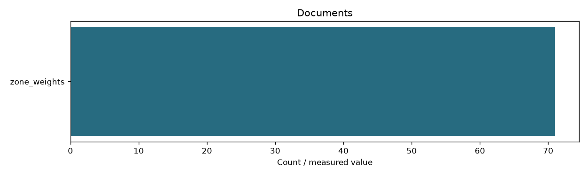

Learning document references
Filter measurements
datasets
{'zone_weights': {'documents': 71, 'bytes': 3338088, 'directory': 'data/step_04_weights/documents'}}
unique_documents
71
source
Full extracted source text from SQLite; these files are for reference, not model inputs

documents